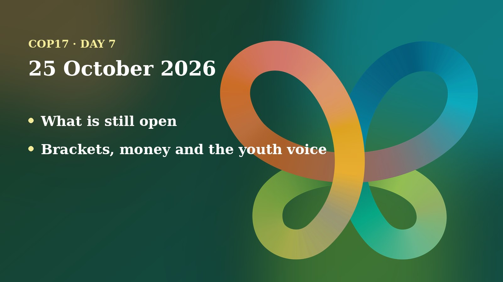

Sunday opened the second and last week of COP17 with fewer formal meetings to report and many open questions. Fourteen decisions are done. The hardest ones, on money, soil and the voice of Indigenous peoples, are still bracketed.
The day in negotiations
Sunday was the first day of COP17's second and final week, and I found no published report of a plenary or working group meeting for 25 October. The UN Transcripts site, which carries automatic and unofficial transcripts of the formal meetings, lists only the Science Forum for the day, and that page had no transcript text when I read it. So this recap does not describe talks that no source confirms.
What I can say is where things stand. Armenpress reported on Sunday morning that 14 decisions were adopted in the first week under the Convention on Biological Diversity (CBD) and its two protocols, the Cartagena Protocol on biosafety and the Nagoya Protocol on sharing the benefits of genetic resources. It named topics such as biosafety, invasive alien species, gender equality, awareness-raising, compliance and monitoring. CBD Executive Secretary Astrid Schomaker highlighted the long negotiations and consensus-building behind them, and the COP17 team said: "One week completed. Another important week of negotiations ahead."
The Earth Negotiations Bulletin (ENB) report on Friday 23 October shows what is left. Parties still disagree on how to pay for the Nagoya Protocol, with a paragraph on developed countries' funding left in brackets, the marks that show wording is disputed. Talks on soil biodiversity ended without agreement on support for research and on reforming harmful subsidies, and the chair set up a Friends of the Chair group. The group on Article 8(j), which covers Indigenous peoples and local communities, was still working through a heavily bracketed text on a new subsidiary body, and an informal group was set up on how its Indigenous co-chair would be chosen. The financial mechanism talks, about the fund that helps pay for the global biodiversity framework, were also still going.
Positions and stakeholders

Without a Sunday plenary there are no new statements to report. The most recent positions I could read come from the ENB account of Friday, and they show who is pulling in which direction:
- Africa Group and developing countries. Senegal, speaking for the African Group, urged developed countries to honour their financial commitments, and Jamaica stressed mobilising enough resources, according to a Xinhua feature published on Sunday.
- Russia, the EU and others on soil. The Russian Federation proposed replacing "pollution" with "trace elements and heavy metals" in the soil text and was opposed by the EU and others (ENB).
- Fiji on education. Fiji said it was concerned that wording on dedicated resources for Indigenous peoples and local communities, women and youth to run community-led education was left out of the final decision on communication, education and public awareness (ENB).
- Guatemala on gender. When the Gender Plan of Action was adopted, Guatemala stressed the need for a subsidiary body on gender and biodiversity (ENB).
The public programme carried on. According to the Science Policy Forum's listing on the website of the International Union of Biological Sciences (IUBS), the forum's second day ran on Sunday in two contact-group rooms, with sessions on wildlife trade, using data to guide action, delivering the 30x30 goal (protecting 30 percent of land and sea by 2030), nature-positive recovery after disasters and conflict, and how benefits from digital sequence information (genetic data held in databases) are shared. The COP17 parallel-events page also lists the Nature and Culture Summit as running on 24 and 25 October and a Business and Biodiversity Forum on 25 October. I could not read reports of what was said in those sessions, so I do not describe them.
A Xinhua feature from Yerevan explained the conference's butterfly emblem: a ribbon in 23 colours, one for each target of the Kunming-Montreal Global Biodiversity Framework. It also recalled that fewer than half of the national targets assessed are on track, and that the first global review of progress depends on good monitoring data.
Numbers to know
- 14 decisions adopted in the first week, according to Armenpress.
- 23 colours in the COP17 butterfly, one per framework target (Xinhua).
- 196 Parties to the Convention on Biological Diversity (Xinhua).
- Fewer than half of the national targets assessed are on track (Xinhua).
- 4 years remain until the 2030 deadline of the framework (Xinhua).
Through a child and youth lens
Sunday brought no formal decision on children or young people, and I found no UNICEF or youth caucus statement from the day. But the week's record already holds two things worth noticing for the next generation. First, Fiji's complaint to the plenary: money for community-led education that reaches Indigenous peoples, women and youth was dropped from the final text on communication and education. Children learn about nature mostly through school, family and community, so who gets resources for that education matters.
Second, youth voices are present in the science programme. The IUBS listing for Sunday names Ronja Fischer of the Global Youth Biodiversity Network (GYBN) as a speaker in the session on turning data into policy, and the session on nature-positive recovery lists youth engagement among its themes. Youth are heard there as speakers and partners, not only as an audience.
As a member of the UNICEF Global Delegation, Narek Ohanyan advocates for including children and young people in the CBD process. From that standpoint, the decisions to watch this week are those that decide who pays and who sits at the table: the financial mechanism, the 8(j) subsidiary body and any wording on young people and future generations in the global review of progress. A 2030 target is a promise made to today's children, who will be adults when it is judged.
On my calendar today
According to Narek's COP17 schedule, he was listed for the Nature and Culture Summit field trip to Lake Sevan, organised by the Ministry of Environment, from 08:00 to 18:00. No Armenia Tree Project booth hours are scheduled for 25 October; the booth reopens on Monday 26 October from 09:00 to 20:00. Co-hosting the booth does not block his calendar, and he is open to speaking requests. This is the schedule only, not a report of what happened.
What to watch tomorrow
- Whether contact groups and working groups resume on Monday 26 October, and what the updated ENB issues report.
- Credentials: the President asked countries to submit them by Monday 26 October, and the ENB lists the credentials report among Friday's items.
- The Article 8(j) text and the choice of an Indigenous co-chair for the new subsidiary body.
- The financial mechanism package and any bracketed language on resources for youth and community education.
Follow where I am each day on my COP17 schedule, and the daily news in the Newsroom.
Sources
- Earth Negotiations Bulletin, Vol. 9 No. 888, UN Biodiversity Conference Highlights: Friday, 23 October 2026 (IISD, 26 Oct 2026). https://enb.iisd.org/sites/default/files/2026-10/enb09888e.pdf
- COP17: 14 decisions adopted during the first week (Armenpress, 25 Oct 2026). https://armenpress.am/en/article/1263735
- Feature: A butterfly in Yerevan highlights common ground on biodiversity (Xinhua, 25 Oct 2026). https://english.news.cn/asiapacific/20261025/4f85b556015a4b12b890cdb922f371fd/c.html
- 7th Science Policy Forum for Biodiversity, COP 17 Yerevan, programme for 25 October (IUBS). https://iubs.org/iubs-activities-2/7th-science-policy-forum-for-biodiversity-cop-17-yerevan/
- Parallel Events (COP17 Yerevan official site, read 25 Oct 2026). https://cop17yerevan.am/en/parallel-events
- Science Forum (25 Oct), UN Transcripts, automatic and unofficial record (UN, 25 Oct 2026). https://transcripts.un.org/en/asset/k1p/k1pix06dys